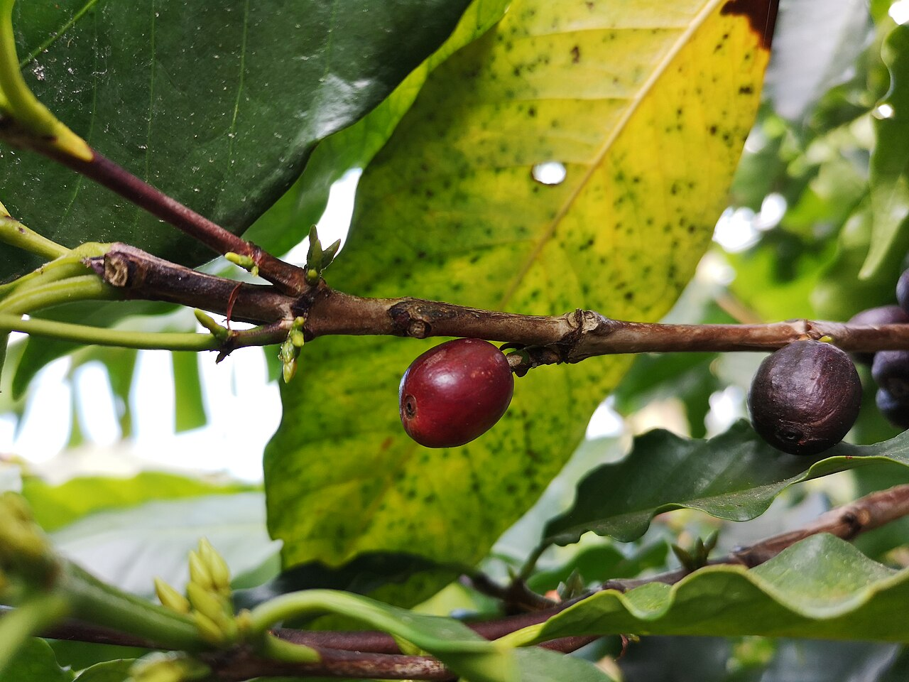
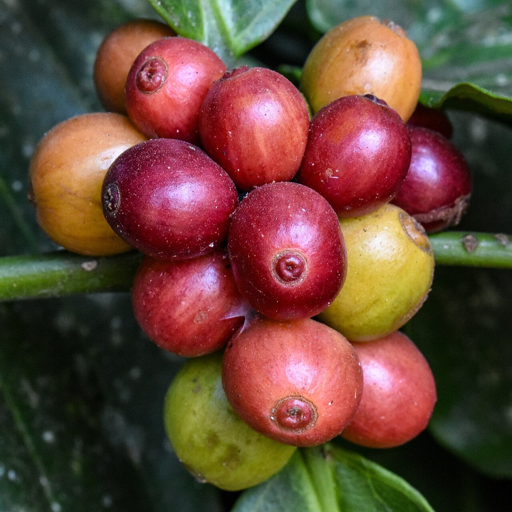
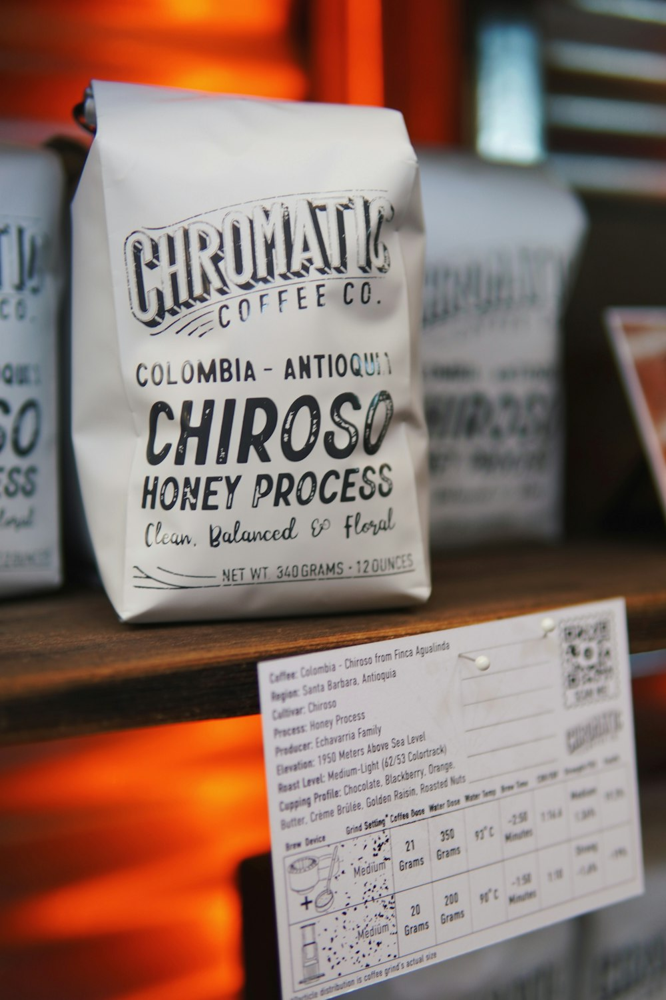
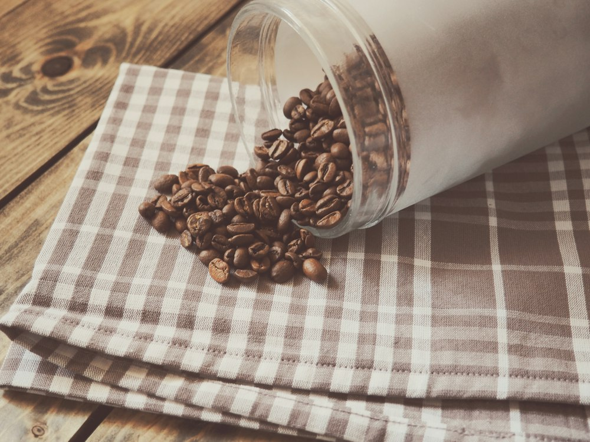

Arabica và Robusta là gì?
Arabica và Robusta là hai nhóm cà phê phổ biến. Người uống thường mô tả Arabica có hương thơm đa dạng và vị chua sáng hơn; Robusta thường cho cảm giác đậm và hậu vị rõ. Đây là mô tả khái quát, vì hương vị còn tùy vùng trồng, sơ chế và mức rang.


Lưu ý: Hai ảnh là quả trên cây, giúp minh họa nguồn gốc hạt; màu hoặc hình dạng hạt rang không đủ để xác định chắc chắn giống Arabica hay Robusta.
Đọc nhãn trước khi mua
Tìm loại hạt hoặc tỷ lệ phối trộn, ngày rang, mức độ rang, nguồn gốc và khuyến nghị pha. Nhãn cụ thể giúp bạn biết gói cà phê hợp với phin hay phương pháp khác.

- Thích vị đậm: thử Robusta hoặc hỗn hợp có tỷ lệ Robusta cao.
- Muốn hương thơm nhẹ và nhiều sắc thái: thử Arabica rang vừa.
- Chưa rõ khẩu vị: mua gói nhỏ, pha theo cùng một công thức và ghi lại cảm nhận.
Chọn hạt theo cách pha
Phin thường hợp với mức rang vừa đến đậm và cỡ xay dành cho phin. Nếu dùng máy pha hoặc pour-over, tìm hướng dẫn riêng trên nhãn. Một công thức phù hợp với loại hạt cụ thể hữu ích hơn việc chỉ chọn theo tên giống.
Bảo quản để giữ hương
Đóng kín túi sau khi dùng, cất nơi khô mát và tránh ánh nắng trực tiếp. Chỉ xay lượng cà phê vừa đủ cho mỗi lần pha.
